Our group participated in ISCIT 2024, a forum for researchers and experts to discuss technological innovations. We presented our work, "Designing a User-Centric American Sign Language Translation System: Integrating Machine Learning with Design Thinking", under Artificial Intelligence for Communications and IT. This project leverages machine learning to translate ASL into text. Our research highlights the system’s usability and its potential to enhance communication accessibility and bridge gaps for ASL users. Our published paper is available for review on IEEE Xplore.
Web-based American Sign Language (ASL) Translation Platform
MANU
Frontend Developer, UX/UI Designer, Communication Engineer
August 2023 - May 2024
Our team developed the 'Manu' web-based application, a user-centric platform for American Sign Language (ASL) translation and learning that leverages machine learning. Using a design thinking approach, our system aims to enhance accessibility and improve the quality of life for individuals who are hearing impaired or use sign language. It integrates real-time data (video input) and translates ASL into both English and Thai, raising awareness about ASL while providing a platform for users to develop their skills and proficiency in ASL. Our system bridges communities through technology, enhancing communication inclusivity and fostering greater accessibility for individuals using sign language.
The system integrates machine learning using YOLOv8 for image detection and classification, along with cloud technology, deployed on AWS. The backend is developed using FastAPI and Go (Golang), while the frontend utilizes the React.js framework, Vite build tool, and languages including JavaScript, TypeScript, HTML, and CSS, with Tailwind CSS and Material-UI for styling.
System Design
Manu is designed with a robust machine learning model and architecture to ensure accurate ASL detection and interpretation.
System Architecture
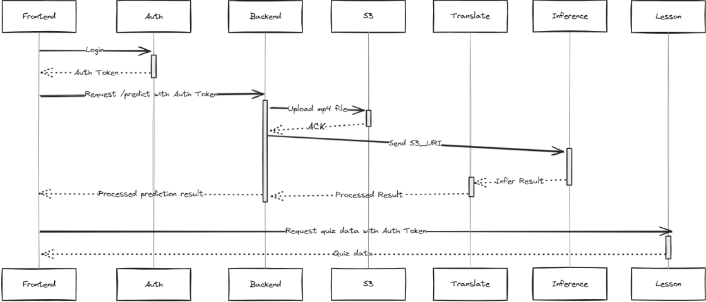
API Flow
System Overview: Frontend Functions and Features
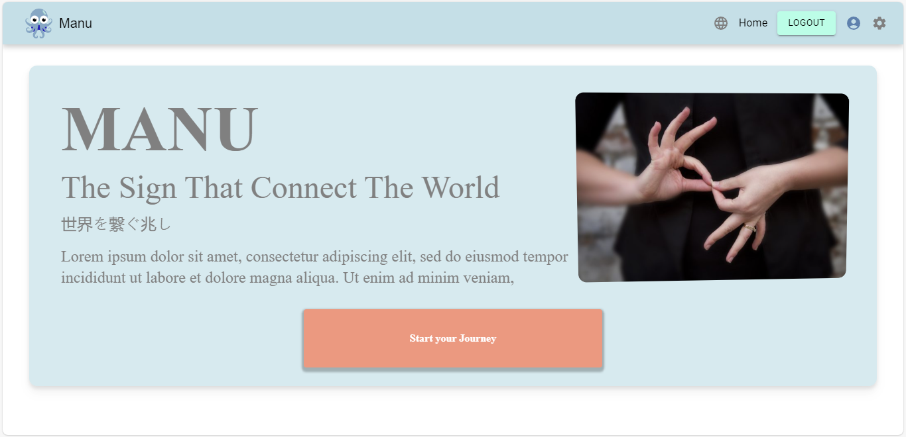
Landing Page
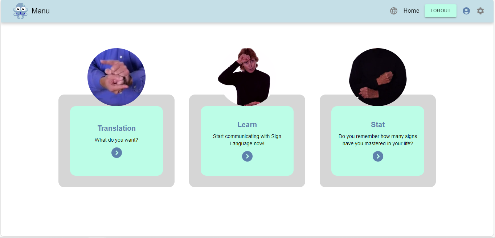
Home Page
After landing on the homepage, users can select from the following functionalities in Manu:
Authentication:
Users can sign up and log in using the 'auth API', for which the authentication token is required to access the other functions.
Sign Up: Users must set a sufficiently strong password that meets the specified criteria, as indicated by the red texts. Additionally, they must agree to the terms and conditions before being able to click 'Sign Up'. After the user enters their information for signup, a verification code will be sent to the email they registered with. They will need to enter this code to confirm their account. Once the correct code is entered, the user will successfully sign up and gain access to the system.
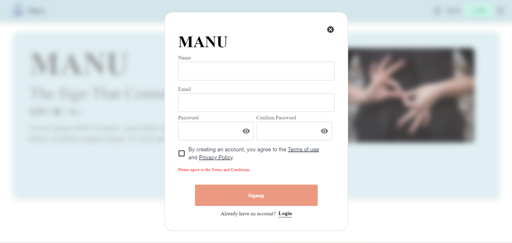
Sign up Modal
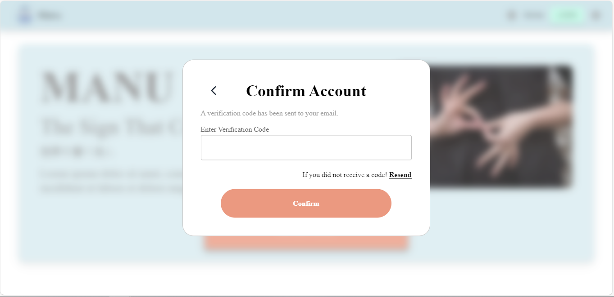
Confirm Account Modal
Log in: Users must enter their login email and password correctly to access the system. Alternatively, they can click 'Sign Up' if they don't have an account or 'Forgot Password' if they need to reset their password.
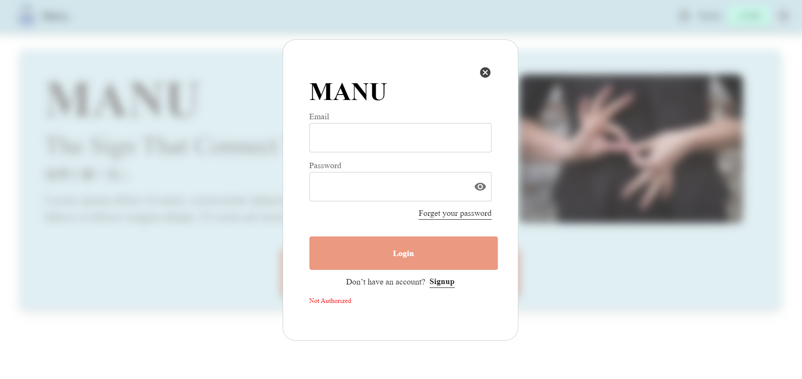
Login Modal
Forget Password: If the user forgets their password, they can enter their email in the 'Forgot Password' modal. A verification code will be sent to their registered email. Once the user enters the correct code, they will be able to reset their password.
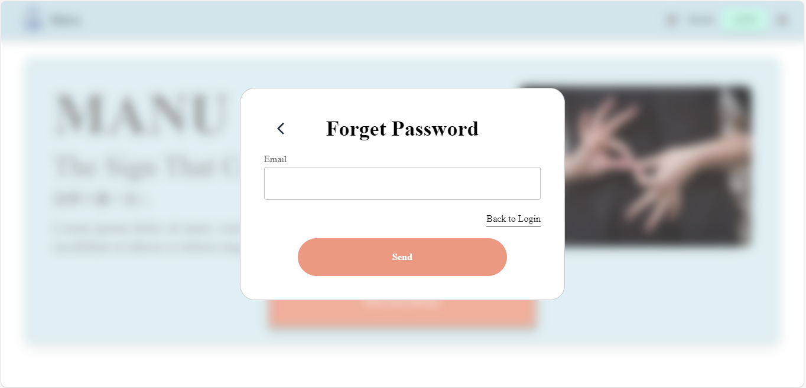
Forget Password Modal
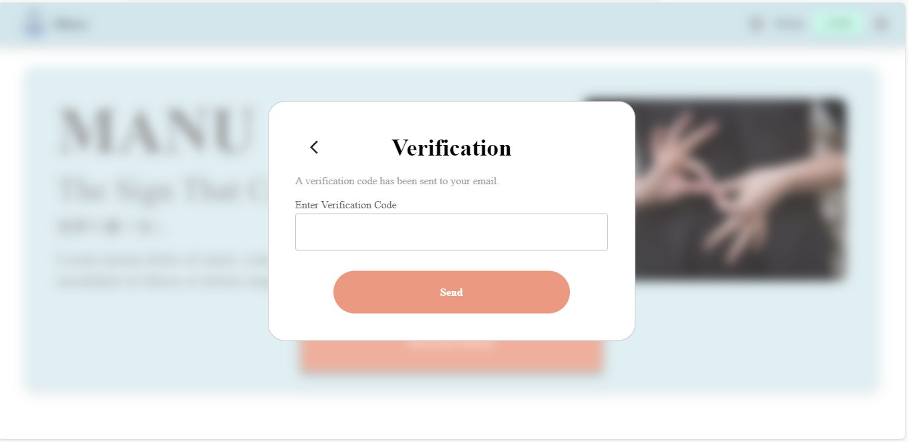
Verification Modal
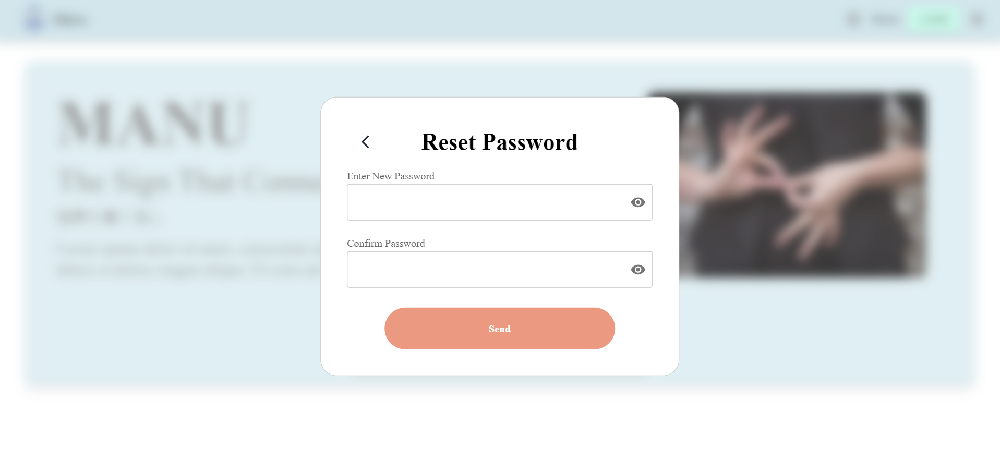
Reset Password Modal
If a user attempts to access a function without successfully logging in, the route will be protected. A pop-up modal will appear, informing the user that authorization is required, and they will be unable to access the requested function.
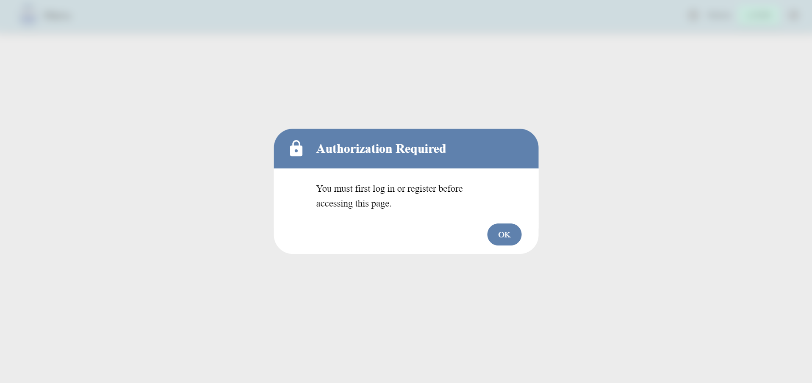
Protected Routes
Translation:
The translation function captures real-time video data of the user's hand movements through the device's camera and sends it to the backend via the Prediction API. The video, uploaded as an MP4 file, is processed using machine learning (ML) algorithms, and the results are returned to the user.
The results include:
class: The meaning of the ASL sign.
translated: The translated meaning of the ASL sign in Thai.
average: The average confidence of the detection, The percentage of how closely the detected sign matches the one from the database.
count: The count of detected hand signs in each individual frame of the video.
Translation Functions
The system will prompt the user for permission to start recording from their camera. Once the user grants permission and clicks "Start Recording", the camera recording will begin, allowing the user to perform the sign they wish to translate..
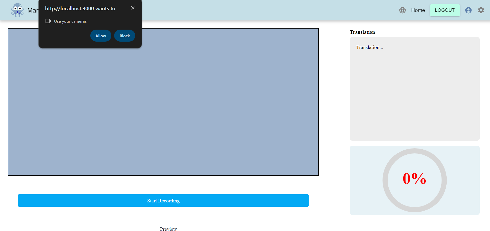
Translation page-open camera
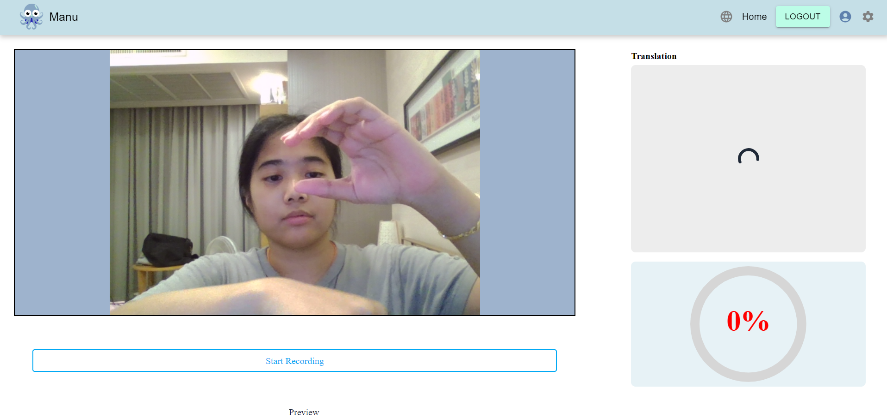
Translation page-stop recording
After the user clicks 'Stop Recording,' the video file is sent for processing and sign prediction through the recognition function. The machine learning model compares the recorded sign and returns the top three signs with the highest accuracy, indicating the closest matches. These results are displayed in the translation box, showing the hand sign's meaning in both English and Thai. Below the results, a semicircular progress bar will indicate the accuracy, with the color representing the confidence level: red for confidence below 50%, yellow for confidence between 50% and 60%, and green for confidence above 60%. If only one sign matches, the result will display that sign's details.
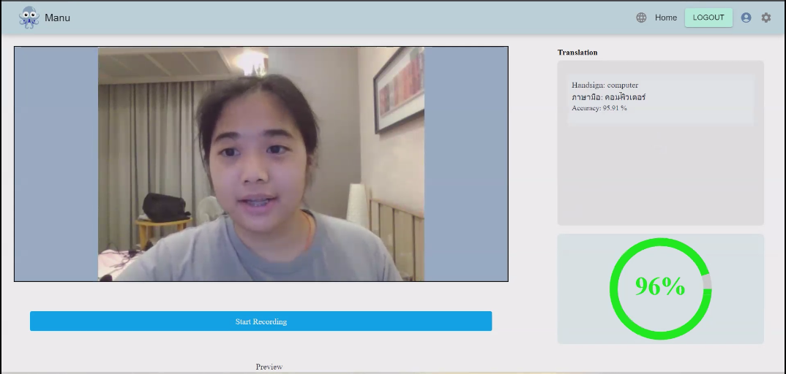
Translation page-result
Quiz & Learning:
The Quiz API allows users to access video content from the cloud, displaying a hand sign motion. The user is then required to correctly identify the meaning or class of the ASL sign they see, either in English or Thai. . The system will verify whether the user's answer matches the expected classification. Once all the quiz questions are completed, the system will display the user's score, including the number of correct answers and the percentage of correct responses.
User accesses the learning and quiz pages.
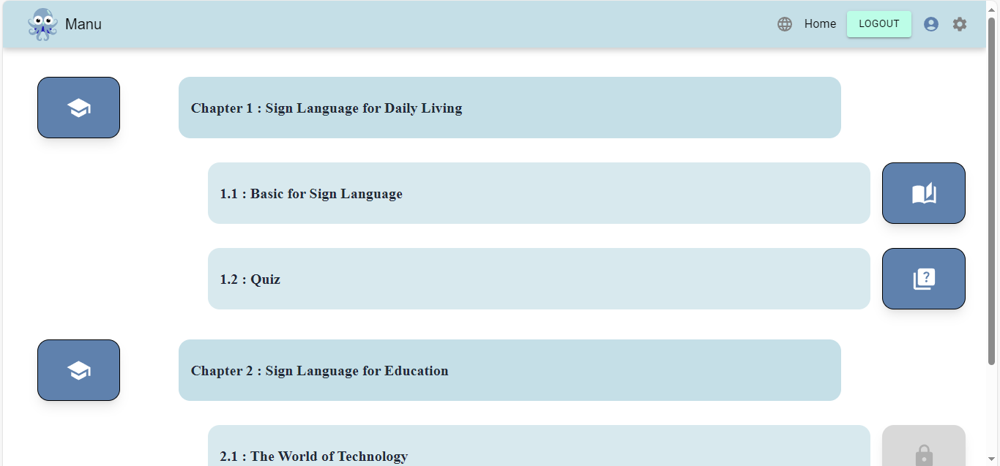
Learn page
The user inputs the answer they believe is the closest meaning to the ASL sign they see.
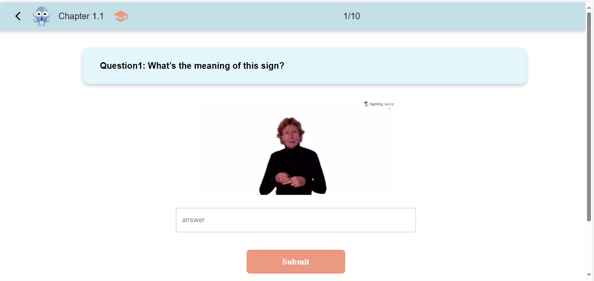
Quiz page
After the user completes the quiz, the score, including the number of correct answers and the percentage, will be displayed.
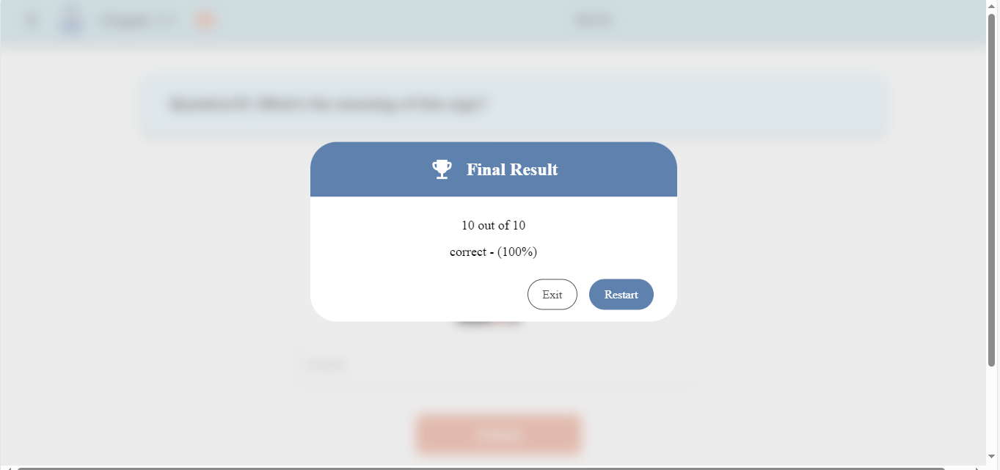
Final Result Modal
The user can exit the quiz at any time by clicking the backward arrow button, which will trigger the Exit Quiz modal to pop up
Exit the Quiz Modal
If the user clicks 'Stat' from the homepage, they will be directed to the History page, which displays a bar chart showing the top translated signs based on user data.
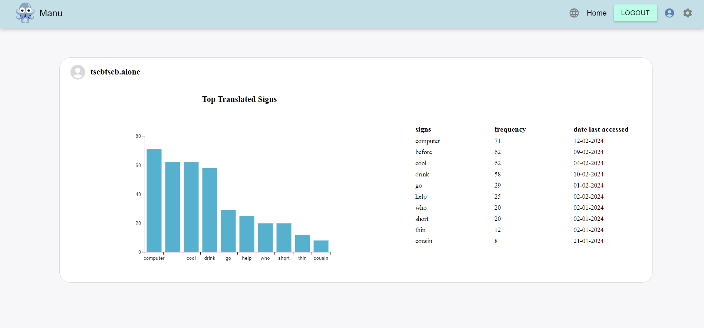
History Page
Result
After conducting usability testing with both sign language experts and users, the system achieved a System Usability Scale (SUS) score of 74.69, indicating strong usability and high adoption potential. The system also achieved an average accuracy of 81.24% in predicting ASL. These technologies enable real-time ASL translation, interactive ASL lessons, and progress tracking, all of which contribute to advancing ASL communication and education.